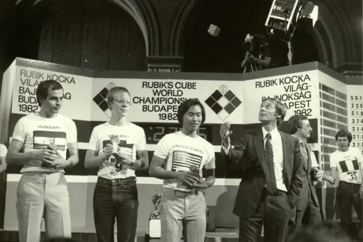

The Rubik's Cube, also known as the Magic Cube, is a three-dimensional mechanical puzzle that has captivated minds around the world since its invention in 1974 by Ernő Rubik, a Hungarian architect and professor of architecture. Originally called the "Magic Cube," Rubik created the puzzle as a teaching tool to help his students understand three-dimensional geometry. However, it quickly gained popularity beyond the classroom, and by 1980 it was licensed by the Rubik's company and marketed as a toy puzzle.
The Rubik's Cube gained global recognition as a challenging brain teaser, sparking a worldwide craze in the 1980s. One significant event in the history of the Rubik's Cube is the Rubik's Cube World Championship, held in Budapest, Hungary, which holds special significance as the birthplace of the puzzle. The first official Rubik's Cube World Championship took place in Budapest in 1982, attracting competitors from around the globe who showcased their speed-solving skills. Since then, Budapest has remained a prominent location for Rubik's Cube competitions, hosting numerous championships and other events related to the popular puzzle.
